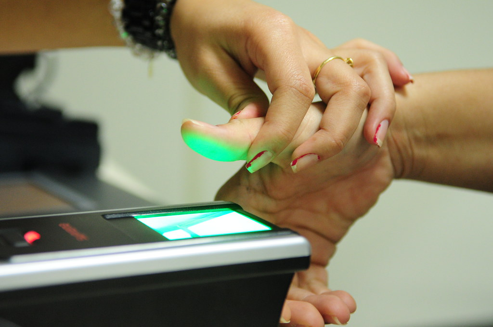

Definimos la biometría como la parte de la biología que estudia en forma cuantitativa la variabilidad individual de los seres vivos utilizando métodos estadísticos. Es una tecnología que realiza mediciones en forma electrónica, guarda y compara características únicas para la identificación de personas.
La forma de identificación consiste en la comparación de características físicas de cada persona con un patrón conocido y almacenado en una base de datos, de esta forma permitirá e! control de acceso físico, incluso es aplicable como método de identificación y acceso a sistemas operativos y aplicaciones. Las características biométricas de una persona son intransferibles a otra, por lo que hace a estos sistemas muy seguros.
Veamos a continuación algunas de las formas de identificación biométricas más comunes:
- Huella digital: se basa en el principio de que no existen dos huellas dactilares iguales, este sistema viene siendo utilizado desde el siglo pasado con excelentes resultados. Cada huella digital posee pequeños arcos, ángulos, bucles, remolinos, etc. (llamados minucias) características y la posición relativa de cada una de ellas es lo analizado para establecer la identificación de una persona. Está aceptado que cada persona posee más
de 30 minucias, y que dos personas no tienen más de ocho minucias iguales, lo que hace al método sumamente confiable, y uno de los más empleados por su baja relación calidad/precio. - Verificación de voz: la dicción de una (o más) frase es grabada y en el acceso se compara la voz (entonación, diptongos, agudeza, etc.), este sistema es muy sensible a factores externos como el ruido, el estado de ánimo y enfermedades de la persona, el envejecimiento, etc., por lo que no es un mecanismo muy adoptado.
- Verificación de patrones oculares: basado en los patrones del iris o de la retina y hasta el momento son los considerados más efectivos (en 200 millones de personas la probabilidad de coincidencia es casi 0). La principal desventaja es que es un método intrusivo. Las personas son reacias a que les analicen los ojos, por revelarse en los mismos enfermedades que en ocasiones se prefiere mantener en secreto.
- Verificación Automática de Firmas (VAF): es extremadamente difícil reproducir las dinámicas del trazo de realización de las firmas, aunque el efecto visual final parezca similar. La VAF, usa emisiones acústicas, toma datos del proceso dinámico de firmar o de escribir. La secuencia sonora de emisión acústica generada por el proceso de escribir constituye un patrón que es único en cada individuo.
Existen algunas otras soluciones a la biometría más complejas y menos usadas en acceso a organizaciones o a un sistema informático concreto, como son la geometría de la mano, el reconocimiento facial o patrones térmicos. Lo que sigue a continuación es una tabla en la que se recogen las diferentes características de los sistemas biométricos:
| Ojo (Iris) | Huellas dactilares | Escritura y firma | Voz | |
| Fiabilidad | Muy alta | Muy alta | Media | Alta |
| Facilidad de uso | Media | Alta | Alta | Alta |
| Prevención de ataques | Muy alta | Alta | Media | Media |
| Aceptación | Media | Alta | Muy alta | Alta |
| Estabilidad | Alta | Alta | Baja | Media |